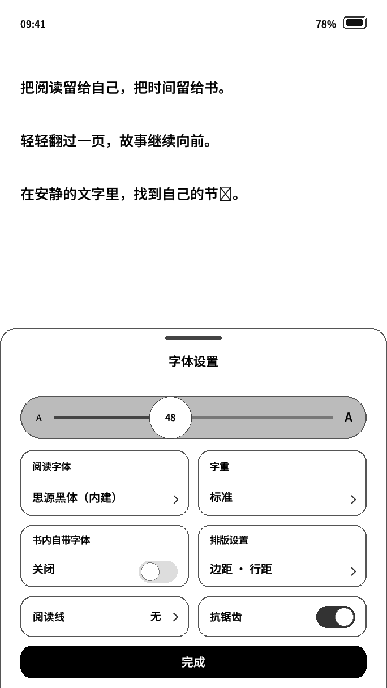
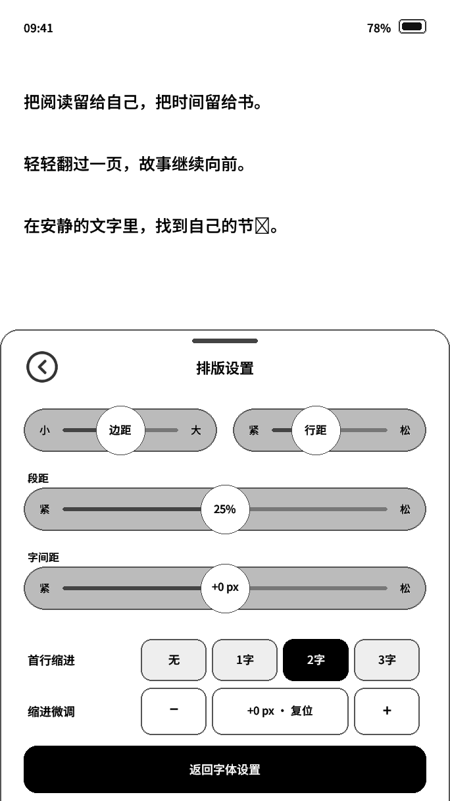
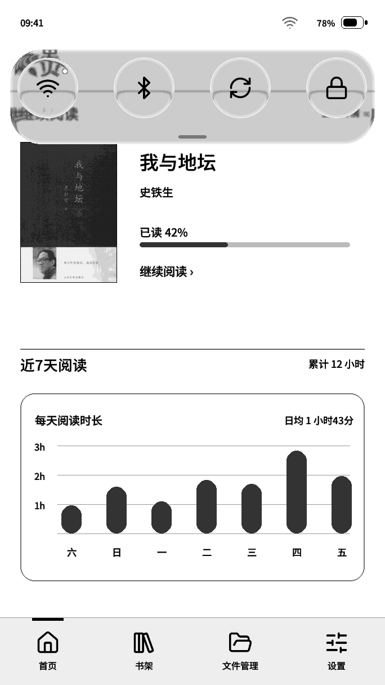

QUICK START GUIDE
新增功能简明说明书
适用：rc96 及后续版本对照：上一版 rc95想知道这次更新怎么用，从下面对应的功能开始。涉及页面名称与按钮名称，均按当前固件编写。
支持关键词筛选，也可以点击左侧目录定位。
没有找到对应内容。可以换一个短词，例如“字体”“书架”或“锁屏”。
字体与排版，调到适合自己的程度
进入位置阅读页面 → 从屏幕底部向上滑 → 字体设置
底部上滑即可呼出阅读工具栏，无需把某个按键设为工具栏入口。进入「字体设置」后，可调整字号、选择阅读字体、微调字重及设置排版。
| 选项 | 这次可以怎么调 |
|---|---|
| 字号 | 18～90 px，每档 1 px。新默认值为 48 px，已有阅读设置沿用保存值。 |
| 阅读字体 | 点击选择字体；当前字体名称直接使用该阅读字体显示，便于辨认效果。 |
| 字重 | 点击进入横向胶囊，左「−」变细、右「+」变粗，每次 1/16 px；范围 −2～+2 px，「标准」为字体原始笔画。 |
| 抗锯齿 | 开启可平滑正文边缘；设置面板的文字保持清晰，不随正文开关变成锯齿。 |
调整段距、字间距和边距
- 在「字体设置」中点击「排版设置」。
- 移动对应滑条：边距保留多个中间档位；字间距为 −15～+15 px，每档 1 px，0 px 在中间。
- 段距共 11 档：0%、5%、10%、15%、20%、25%、30%、40%、50%、75%、100%。25% 位于中间档位。
- 完成后点击黑底白字的「返回字体设置」，再点击「完成」回到阅读。
首行缩进不齐时，怎么微调
- 先选择「无 / 1字 / 2字 / 3字」中的基础缩进。
- 再用「缩进微调」的「− / +」校正位置，范围为 −100～+100 px，每次 1 px。
- 需要连续调整时，按住加减按钮；松手后应用排版。点击中间数值可复位为 0。
两个容易混淆的地方：段距滑条的中间档是 25%，不代表把已有段距重置为 25%；字重微调改变的是笔画粗细，不改变字号。


用三个按键切页面、翻书架
以下规则适用于首页、书架、文件管理和设置的主页面。阅读正文仍使用「阅读设置 → 按键控制」中的配置。
| 操作 | 效果 |
|---|---|
| 短按左键 / 右键 | 在四个主页面之间循环切换。 |
| 长按中键 | 对当前主页面执行全刷，清理残影。 |
| 书架中短按中键 | 进入书架分页控制；再短按一次退出。 |
书架分页控制的使用顺序
- 进入书架，短按中键。下方分页箭头出现加粗的轮廓描边，表示左右键已接管书架翻页。
- 短按左键到上一页，短按右键到下一页；箭头会给出局部按压反馈。
- 再次短按中键，恢复主页面切换。也可以直接点击底栏去其他页面，中断分页控制。
底栏四个图标每次点按都有轻微放大、回位反馈，包括点击当前页面、快速连点或页面仍在加载时。
四个翻页按钮，快速到达首尾
书架和文件管理的分页栏现在统一为：
从左到右最前 ｜ 上一页 ｜ 数量与页码 ｜ 下一页 ｜ 最后
- 最前：直接回到第一页。
- 上一页 / 下一页：每次移动一页。
- 最后：直接跳到最后一页。
- 书架中间保留书籍数量和当前页信息。分页栏整体上移，减少与底栏的误触。
书籍和字体放在哪里
书籍放入 TF 卡根目录下的 books 文件夹；导入字体放入 fonts 文件夹。文件管理中已移除「设为书籍目录」和「设为字体目录」，不再需要自行指定目录。
普通模式进入书架时，较强的灰阶整理集中在封面和书架材质区域；状态栏、题头及分页区域采用较柔和的刷新，并与中间书架在同一轮扫描中呈现，不再分三段等待。无需额外设置。
透明书封：把图案叠在当前页面上
进入位置设置 → 个性化功能 → 锁屏样式 → 透明 PNG 书封
- 把 PNG 图片放入 TF 卡的
pictures文件夹。推荐画布尺寸为 684 × 1216 px。 - 进入「透明 PNG 书封」，从目录选择图片。
- 在预览中上下滑动可以切换图片。点击「使用透明书封」，再点「确认」。
- 回到希望作为背景的页面，再进行锁屏。系统会把锁屏前的当前页面作为底图，在其上叠加 PNG 图案和轻微阴影。
可以在首页、书架、设置或阅读页面使用，并不要求先进入阅读。图片保留整张画布的比例和位置；需要精确摆放时，请直接在推荐尺寸的画布上安排图案。
白色怎么变透明？已有透明通道的 PNG 使用原透明度；不透明白底 PNG 只去掉与画布边缘相连的白色区域，保留封闭图案内部的白色。若图案中的白色也连到了画布边缘，建议提前做好透明通道。
下拉菜单：按钮局部反馈，连接更直接
从屏幕顶部边缘向下滑动打开快捷菜单；向上滑动或点击菜单外部可收起。按钮按下后先给出圆内反馈，松手执行操作，WiFi 和蓝牙状态改变时只更新必要区域。
| 按钮 | 使用方式 |
|---|---|
| WiFi | 连接最近保存的网络；已连接时再次点击可断开。传输忙碌时可能暂时保持连接。 |
| 蓝牙 | 开启蓝牙，并在后台尝试连接最近成功使用的翻页器；再次点击可立即关闭，即使尚未连接上翻页器也可以关闭。 |
| 全刷 | 手动执行全刷，清理屏幕残影。 |
| 锁屏 | 按当前选择的锁屏样式进入锁屏。 |
第一次连接翻页器
- 进入「设置 → 连接与时间 → 蓝牙翻页器」。
- 打开「启用蓝牙」，让翻页器进入配对状态。
- 点击「添加翻页器 / 扫描设备」，选择自己的翻页器完成连接。
- 之后可用下拉菜单的蓝牙按钮重连。再次点击快捷蓝牙按钮即可关闭，也可以在设置中关闭「启用蓝牙」。
没有配对记录时，快捷按钮不会随意连接附近设备。若设置中显示「WiFi 使用中，蓝牙暂停」，请等待网络任务结束后重试。

这些变化，正常使用即可生效
- 收藏图标：非全屏阅读时，右上角未收藏显示普通书签形图标，收藏后显示中间带「+」的书签。它表示整本书是否收藏；阅读工具栏里的「书签」仍用于标记具体阅读位置。
- 圆形返回键：统一为圆圈内的左向折角图标，保留原来的返回方式和点按位置。
- 液态玻璃：下拉菜单、关机滑条、重启与取消按钮，以及密码锁屏圆键使用新的玻璃风格。原有操作方式保持一致。
- 阅读刷新：水波纹纯文字翻页减轻笔画先粗后浅的过渡；自动全刷调整文字成像，改善全刷后第一页偏淡的问题。
- 字重与唤醒：字重扩张减少额外灰边；深睡恢复尽量复用有效缓存，减少重复处理资源。
从 rc95 升级到 rc96，更新了什么
- 设置页刷新更自然题头和列表周围保持白底；普通模式进入设置时同步输出、留白只向白擦除，滑动使用柔和差分，保留内容灰阶和手动全刷。
- 开书恢复更可靠启动记录改为紧凑格式；普通版忽略不支持的缓存恢复入口，保留真实图书的中断保护、用户设置与进度。
- 快捷控制更直接蓝牙未连接时也能关闭；快捷全刷省去重复绘制。书架留白保持白色，封面与分页同步呈现。
- 阅读调整更精细字号扩大至 18～90 px；段距 25% 居中；字间距 ±15 px；首行缩进支持更大微调范围和长按连续调整。
- 排版与字体显示修正恢复边距中间档位，字体名称直接预览；优化字重边缘、设置标签抗锯齿及阅读刷新过渡。
- 书架与文件操作统一加入首尾跳页与统一分页图标，提升分页栏位置；固定 books / fonts 目录，移除自定义目录入口；过滤不支持的缓存条目。
- 主页面按键和反馈补齐左右键切主页面，中键长按全刷；书架中键切换分页控制；底栏每次点按都有反馈，圆形返回键统一。
- 锁屏与快捷菜单更新增加透明 PNG 书封和连通白底去除；关机、密码及下拉菜单加入液态玻璃；快捷按钮局部刷新，蓝牙连接最近翻页器。
- 减少等待与突兀刷新深睡恢复复用有效画面缓存；普通书架较强刷新集中到封面与材质区域，题头、状态栏和分页使用柔和刷新，并与中间区域同步呈现。
关于设备里的说明书入口：后续可以在「设置 → 升级和恢复 → 系统升级」中增加「更新日志」与「新增功能说明」，随固件保存，离线也能查看。这里先提供说明书内容，设备端入口待加入。